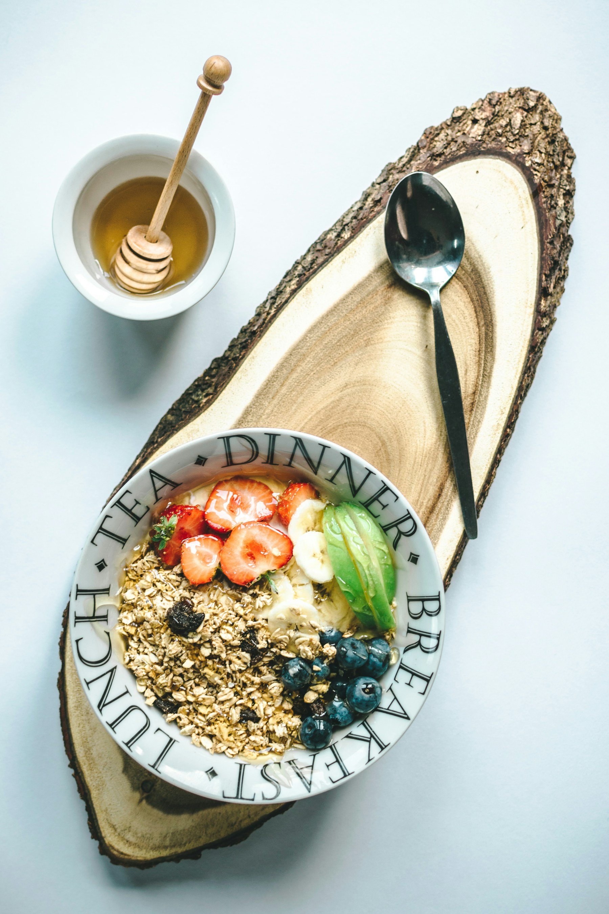

MORNING GARDEN
곡물과 과일, 따뜻한 수프로 시작하는 작은 식탁.

검색어나 분류를 바꿔 다시 살펴보세요.
오트와 요거트, 계절 과일을 한 그릇에 담습니다.
제철 채소와 곡물을 따뜻하게 곁들입니다.
바삭한 빵에 버터와 과일잼을 곁들입니다.
부드럽게 끓인 감자와 양파의 작은 한 그릇.
날짜·시간·인원을 선택해 주세요.
실제 전송·예약이 없는 로컬 데모입니다.입력은 새로고침하면 초기화됩니다.